A visual geography of Prince Rogers Nelson
Houses of Prince
Where Prince lived in Minnesota, 1958–2016
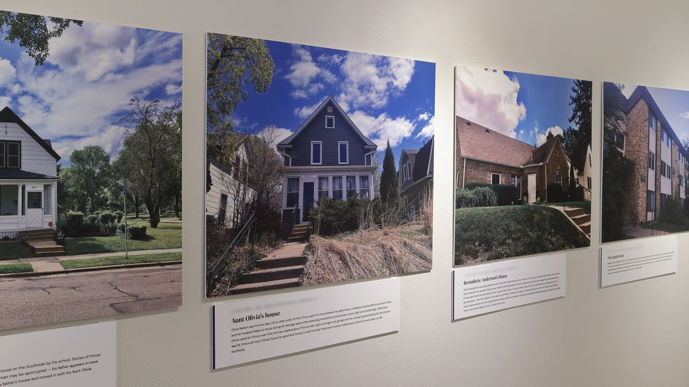
“I took these images and many more on my pilgrimages to Prince’s Minnesota in the wake of his death.”
“While others sought recognition for the place Prince made, I sought recognition of the places that made Prince.”
Houses of Prince is a curatorial project by E.C.Balázs and historian Kristen Zschomler.
Walk the houses
Prince Rogers Nelson was born in Minneapolis in 1958 and lived in more than a dozen Minnesota homes, from his childhood houses in North Minneapolis to Paisley Park in Chanhassen. Select any photograph to begin, then walk on in order.
-
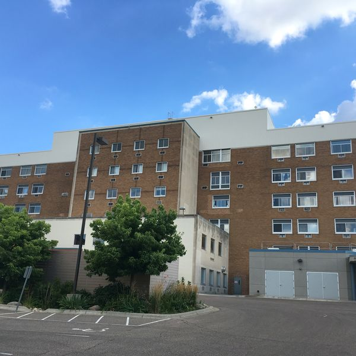
011958BirthplaceSouth Minneapolis Prince Rogers Nelson was born on June 7, 1958, at Mount Sinai Hospital, now Hope Academy. -
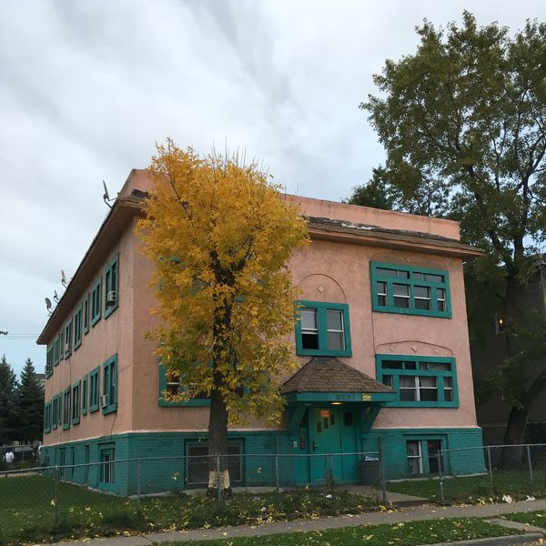
021958First homeSouth Minneapolis A small apartment, home to the young family for the first six months of Prince’s life. -
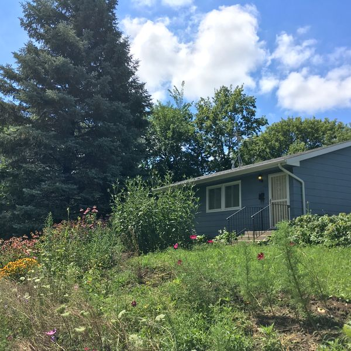
031959–1965The pink houseNorth Minneapolis Where Prince heard his father’s piano and shared a secret language of winks with his mother. Demolished in 1995. -
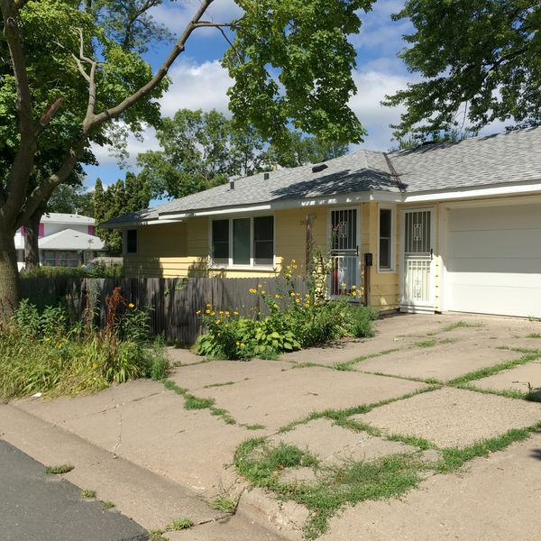
041965–1970The childhood homeNorth Minneapolis Where he mastered the piano by age eight and taught himself songwriting by ear. Now a city landmark and listed on the National Register. -
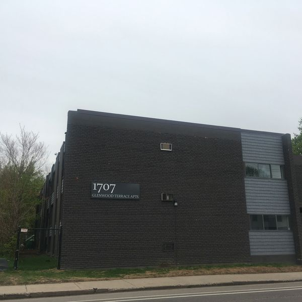
051970John’s apartmentNorth Minneapolis After his parents divorced, he moved in with his father, who soon bought him a guitar. -
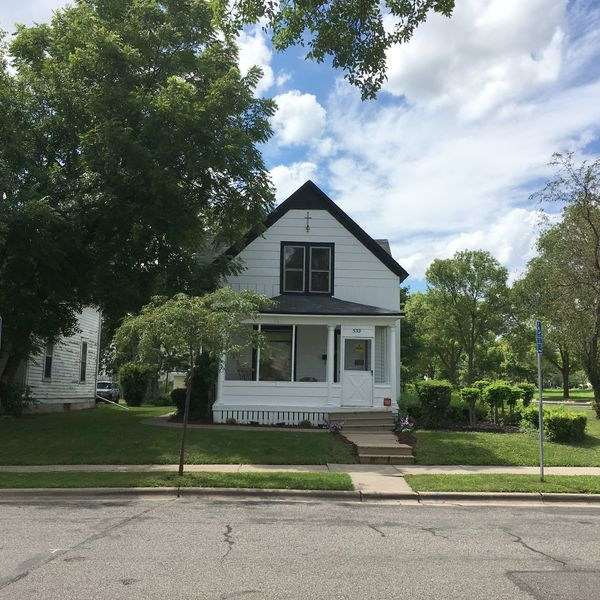
061972John’s houseNorth Minneapolis Father and son shared this house until Prince chafed at John’s rules and left for his aunt’s. -
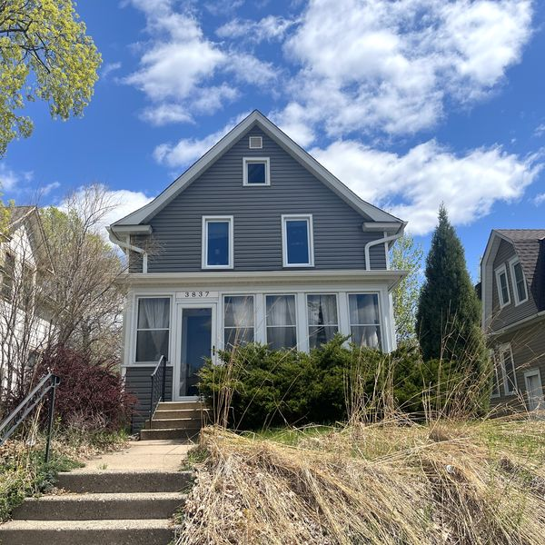
07c. 1973–1974Aunt Olivia’s houseSouth Minneapolis Close to his Southside schools, and to clashes over late nights and constant guitar. -
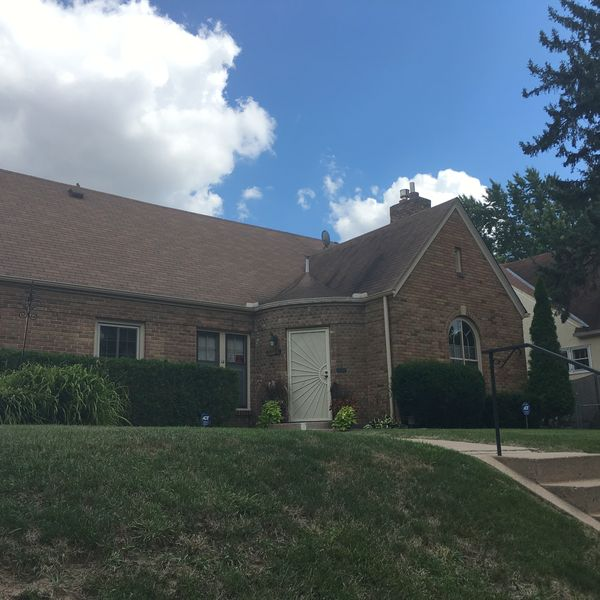
08c. 1975–1976Bernadette Anderson’s houseNorth Minneapolis Where Bernadette Anderson took him in and his band Grand Central rehearsed. -
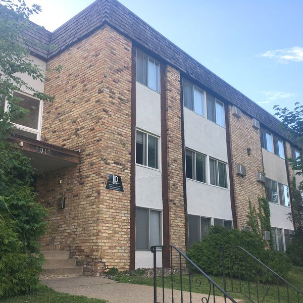
091976–1978First apartmentSouth Minneapolis In Uptown, where he was living when he signed with Warner Bros. at nineteen. -
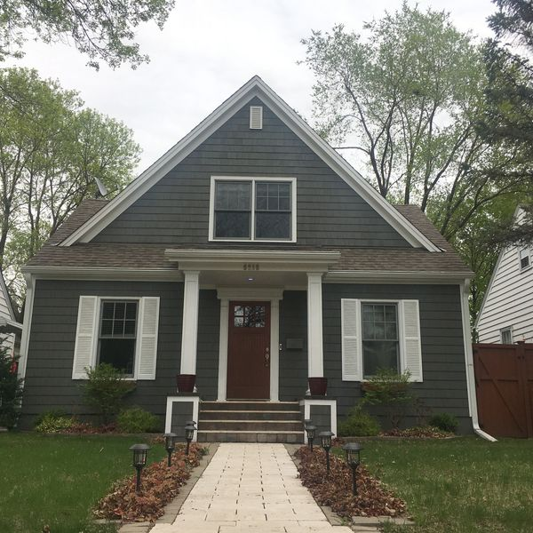
101978–1979First houseSouth Minneapolis A rental at the city’s edge, his first step toward the quiet suburbs where he could play all night. -
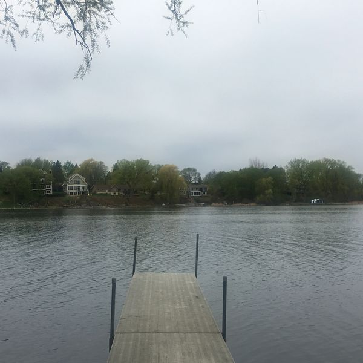
111979–1981The Dirty Mind houseOrono On Lake Minnetonka, where he wrote and recorded Dirty Mind. -
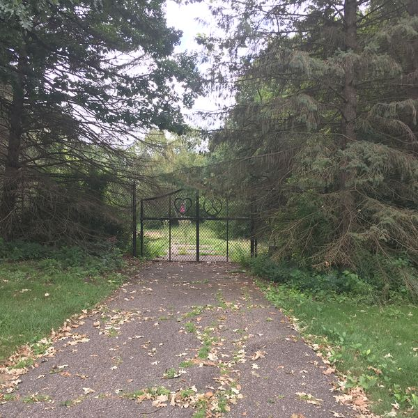
121981–1985The purple houseChanhassen His home studio for Controversy and 1999. His father later lived here; it was demolished after 2001. -
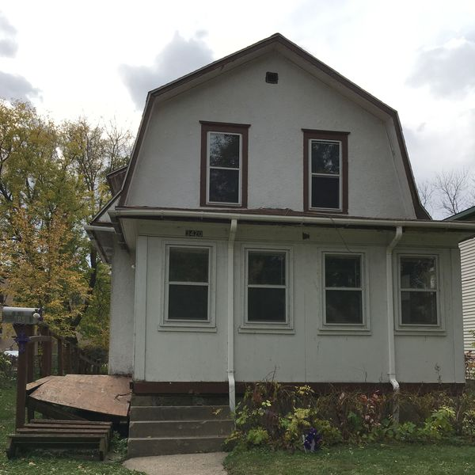
131983The Purple Rain houseSouth Minneapolis He never lived here, but the film made it home to The Kid, and fans still leave tributes on its steps. -
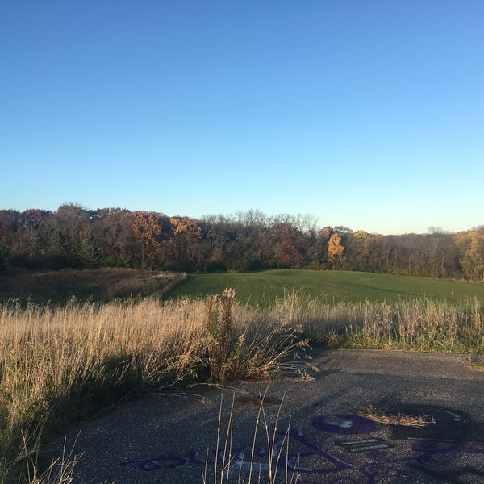
141985–2005The yellow houseChanhassen Its studio saw sessions for the Black Album and Camille. Demolished in 2005. -
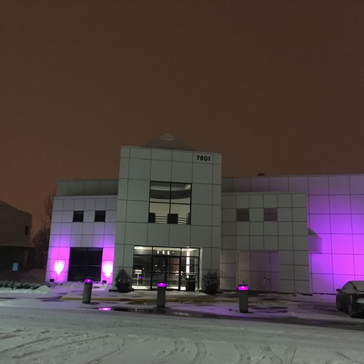
151987–2016Paisley ParkChanhassen The world he built: studio, stage and, at the end, home. -
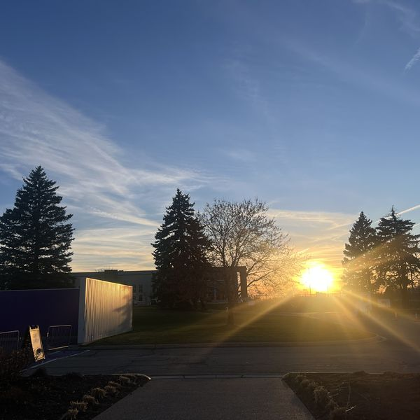
16April 21, 2026From Paisley ParkChanhassen Sunset seen from Paisley Park, ten years to the day after his passing.
Images: E.C.Balázs · Historical research: Kristen Zschomler
The pilgrimage
Walking through Prince’s life
I took these images and many more on my multiple pilgrimages to Minneapolis in the wake of Prince’s death. My grieving for Prince took form as a quest to walk through his life, to visit the places he inhabited, to try to imagine him here on earth, even though I had missed his entire life, and never once saw him perform.
During my visits, I would research every possible site related to Prince and make my way there, usually by bus and with a lot of walking, in hot, sweaty August, golden October, freezing, numb January, and bleak April.
I met Kristen on one of these pilgrimages and discovered a kindred spirit who was using her historian’s expertise to research and catalogue his houses to help preserve them. We decided to collaborate: a first sketch towards a visual, biographical geography of Prince.
E.C.Balázs, founding curator, The People’s Museum for Prince
The research
The places that made Prince
Kristen Zschomler is a historian, archaeologist and preservationist who researches, writes and leads tours about places associated with Prince and the Minneapolis Sound. Over years of research, she has traced and fact-checked Prince’s journey from the Northside to Paisley Park, often challenging long-held stories about where and how he lived.
Her work has been instrumental in achieving historic recognition for three Prince properties in Minnesota: his childhood home on 8th Avenue North, Sound 80 Recording Studio, and First Avenue.
- 2020Kristen’s National Register of Historic Places Multiple Property Documentation Form, Prince: 1958–1987, documents the places associated with his early life and career.
- 2025The City of Minneapolis designates the Nelson House, Prince’s childhood home, a local landmark.
- NowWalk the sites with Kristen through SoundAround Music Tours.
The project
About Houses of Prince
Houses of Prince is an ongoing curatorial research project of The People’s Museum for Prince, begun in 2018. It brings together accurate historical research with creative, personal responses to Prince’s life, because we believe his legacy belongs to everyone. So far it has taken four forms.
-
Exhibition
On the walls
First shown at The People’s Museum for Prince in 2018, and again at Roberts Gallery in North Minneapolis in June 2026, on Bernadette Anderson Way.
Its expanded fifteen-property edition premiered at the International Centre 4 Prince Studies’ Dance On! symposium at the University of Minnesota in June 2026, with a talk by Balázs and Zschomler, Take Me With U: Houses of Prince as Spatial Biography.
-
Film
Dearly Beloved (2026)
The pilgrimage became the museum’s first short film, following a chronological journey to each of Prince’s Minnesota homes.
-
Book chapter
“There Will Be No Death”
Balázs and Zschomler on Prince’s afterlife in Minneapolis, in Blackstar Rising and the Purple Reign, edited by Daphne A. Brooks.
-
Map
Prince’s North Minneapolis
An interactive map of Prince’s homes and other significant places in North Minneapolis, where he grew up.
In the Living Archive
Troy Gua, Le Petit Prince: North Minneapolis series
In The Anderson House, Troy Gua’s miniature Prince climbs the steps to Bernadette Anderson’s front door. It is one of ten scenes from Prince’s North Minneapolis youth, drawn from Gua’s Le Petit Prince series for the museum’s 2026 edition, each paired with a short history written by Kristen Zschomler and E.C.Balázs. We warmly invite you to walk through them all.
Troy Gua, The Anderson House
More in the Living Archive
Take it home
The Houses of Prince poster
The poster was the museum’s thank-you to supporters of the 2026 edition. A new edition and a Houses of Prince publication are in the making. Join the mailing list to hear first.
Sources & further reading
- Kristen Zschomler, Prince: 1958–1987, National Register of Historic Places Multiple Property Documentation Form, 2020
- E.C.Balázs and Kristen Zschomler, “There Will Be No Death: Prince’s Afterlife in Minneapolis,” in Blackstar Rising and the Purple Reign, ed. Daphne A. Brooks (Duke University Press, 2026)
- Andrea Swensson, Got to Be Something Here: The Rise of the Minneapolis Sound (University of Minnesota Press, 2017)
- E.C.Balázs, “Way Back Home: Prince and North Minneapolis,” The People’s Museum for Prince
- E.C.Balázs, “The Love We Make: Prince’s Galpin Boulevard and Dearly Beloved,” The People’s Museum for Prince
- Rebecca Bengal and Alec Soth, “Where Prince lived in Minneapolis,” Vogue, April 2018
- Jay Gabler, “Prince’s childhood homes: MnDOT research helps create a timeline,” The Current, September 2016
- Bernadette Anderson Way, Minneapolis